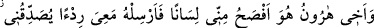

zalimler iflâh olmazlar.
38. Firavun: Ey ileri gelenler! Sizin için benden başka bir ilâh tanımıyorum. Ey
Hâmân! Haydi benim için çamur üzerine ateş yak (ve tuğla imal et), bana bir kule
yap ki Mûsâ’nın tanrısına çıkayım; ama sanıyorum, o mutlaka yalan
söyleyenlerdendir, dedi.
39. O ve askerleri, yeryüzünde haksız yere büyüklük tasladılar ve gerçekten
bize döndürülmeyeceklerini sandılar.
40. Biz de onu ve askerlerini yakalayıp denize atıverdik. Bak işte, zalimlerin sonu
nice oldu!
41. Onları, (insanları) ateşe çağıran öncüler kıldık. Kıyamet günü onlar yardım
görmeyeceklerdir.
42. Bu dünyada arkalarına lânet taktık. Onlar, kıyamet gününde de kötülenmişler
arasındadır.
Mûsâ “dedi ki: Rabbim! Ben onlardan” yâni Kıptîlerden Firavun’un ekmekçiliğini
yapan “Fâtûn” adında “birini öldürmüştüm.” Bu yüzden onların da “beni
öldürmelerinden korkuyorum.”
34. Kardeşim Harun’un dili benimkinden daha düzgündür. Onu da beni
doğrulayan bir yardımcı olarak benimle birlikte gönder. Zira bana yalancılık
ithamında bulunmalarından endişe ediyorum.
“Kardeşim Hârûn’un dili benimkinden daha düzgündür.” Yâni kardeşim Hârûn’un
talâkati ve konuşması benden daha iyidir. Mûsâ (a.s.)’ın dilinde, çocukluk zamanında
eliyle alıp ağzına götürdüğü ateş korunun etkisinden dolayı bir tutukluk vardı ve bu da
beyan ve anlatmanın hakkını vermeğe mânî oluyordu. Bu yüzden Firavun ona: “Yahut
ben, şu aşağılık, neredeyse söz anlatamayacak durumda olan adamdan daha iyi
değilmiyim” (ez-Zuhruf, 43/52) demişti.
Âriflerden biri der ki: Fesâhat makamı, sahv ve temkin makamıdır; sâhibi, bununla
hakkı ve esrârı ilim ölçülerini aşmayan sâde bir uslûb ve ifâde ile anlatmaya muktedir
olur. Bu, Peygamberimiz (s.a.)’in hâlidir. Zira o (s.a.) şöyle buyurmuştur: “Ben, Arabın
en fasîhiyim.”[103] ve “cevâmîu’l-kelim (özlü anlatım) ile gönderildim.”[104] Bu, öyle
bir kudrettir ki, temkin ehli bir ârif de bu özelliğe sâhiptir. Zira o “hâss” ve husûsî olanı
müşâhede edip onunla konuşabilir.
Mûsâ (a.s.)’ın böyle bir talepte bulunmasının nedeni o esnada “sekr” hâlinde olması
ve bu durumu haber vermeğe güç yetirememesidir. Zira kelâmı, hâline uygun bir şekilde